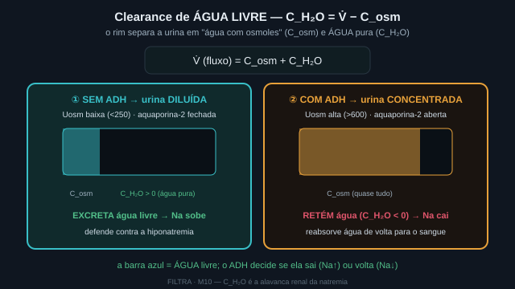
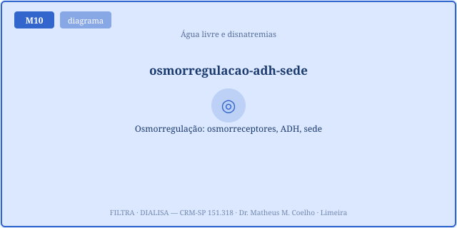
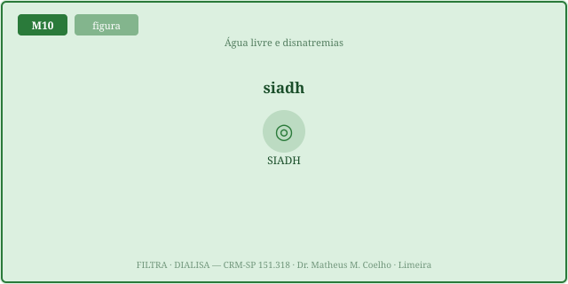
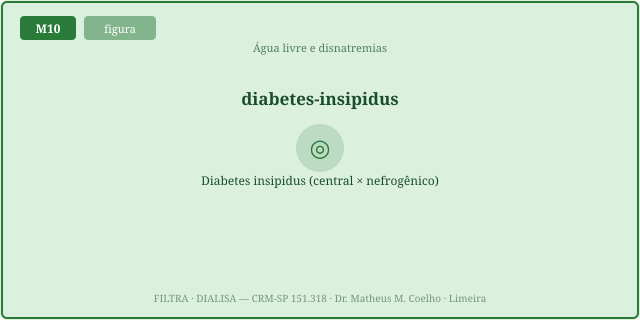
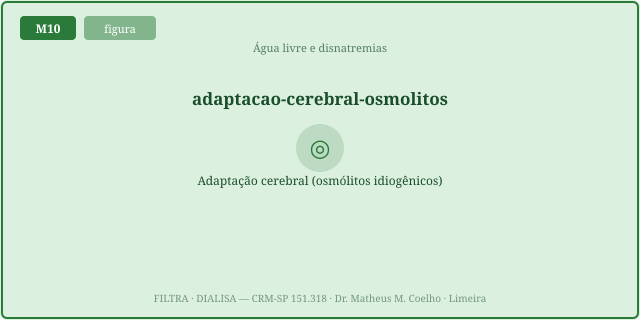
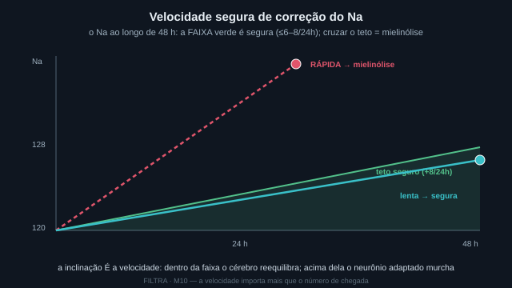
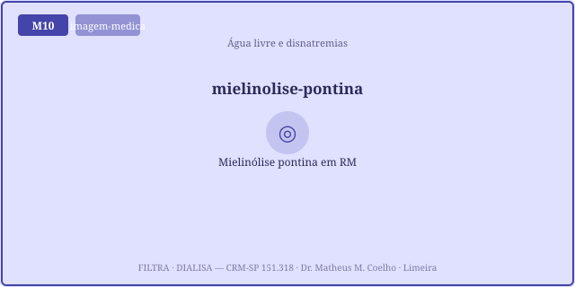
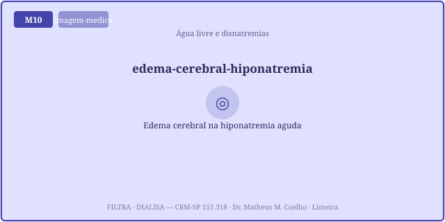

Na ≈ (Na+K trocáveis)/ÁGT — mexa a água (o denominador) e o Na se move. O ADH abre a
aquaporina-2 e reabsorve água livre; a sede é a segunda defesa. O clearance de água livre
C_H2O = V̇ − C_osm diz se o rim dilui (C_H2O>0) ou concentra (C_H2O<0). E o perigo central é a
VELOCIDADE: hiponatremia crônica corrigida rápido → mielinólise; hipernatremia crônica corrigida
rápido → edema cerebral. Corredor seguro ~6–8 mEq/L/24h. Tratar a ÁGUA, não o número.O Na⁺ plasmático não conta quanto sal há no corpo; conta a razão entre os osmoles trocáveis
(Na+K) e a água corporal total (ÁGT): Na ≈ (Na+K trocáveis)/ÁGT (equação de
Edelman). Com o numerador praticamente fixo, ganhar água livre dilui o Na (hiponatremia) e
perder água o concentra (hipernatremia). Disnatremia = distúrbio de ÁGUA, não de sal.

C_H2O = V̇ − C_osm.
① urina diluída → excreta água livre (C_H2O>0, dilui o corpo). ② urina concentrada →
reabsorve água (C_H2O<0, concentra). É a alavanca que move o Na pela ÁGUA.A osmolalidade é vigiada por osmorreceptores hipotalâmicos. Se ela sobe, liberam ADH (vasopressina), que insere aquaporina-2 no ducto coletor → reabsorção de água livre → urina concentrada (U_osm alta). Se a osmolalidade cai, o ADH desliga → urina diluída (U_osm baixa) → o rim expele água. A sede é a segunda defesa, ajustando a ingestão.

No SIADH, o ADH é liberado inapropriadamente (sem estímulo osmótico) → o rim retém água → hiponatremia euvolêmica com U_osm alta (urina inadequadamente concentrada). No diabetes insípido (central = falta de ADH; nefrogênico = rim surdo ao ADH), o rim não concentra → poliúria de água livre → hipernatremia com U_osm baixa. Mesmo eixo (água), sinais opostos.


Em horas, o cérebro se adapta a uma disnatremia crônica trocando osmolitos para igualar a
tonicidade e manter seu volume. Por isso a correção rápida demais é o que mata: numa hiponatremia
crônica, subir o Na rápido encolhe os neurônios → mielinólise pontina (desmielinização osmótica).
Numa hipernatremia crônica, baixar o Na rápido inunda os neurônios carregados de osmolitos →
edema cerebral. Limite seguro: ~6–8 mEq/L por 24 h. A fórmula de Adrogué–Madias estima o
ΔNa por litro de infusato: ΔNa = (Na_inf − Na_sérico)/(ÁGT + 1).


São dois desastres simétricos. A mielinólise pontina segue a correção rápida da hiponatremia crônica (sobe-se o Na rápido, o cérebro encolhe). O edema cerebral segue a correção rápida da hipernatremia crônica — ou a hiponatremia aguda não tratada (a água entra no cérebro). As Fig. 1–9 reaparecem no Caso, na Trilha e na Avaliação como âncoras do raciocínio.


Cinco cenários de água e sódio. (A) Mulher, 68 anos, etilista crônica, confusa há dias: Na 116 mEq/L. (B) Idoso com pneumonia, Na 124, U_osm 480, euvolêmico. (C) Pós-operatório de neurocirurgia hipofisária, poliúria 400 mL/h, Na sobe para 152, urina clara. (D) Maratonista que bebeu muita água, Na 124 agudo, convulsão. (E) Idoso acamado, demente, sem acesso à água: Na 165.
na 116, cronico 1, NaCl 3% a taxa alta → corr24 > teto, regime mielinolise. Corrija
devagar, dentro do corredor (Fig. 7).na 124, adh 0.9 → regime siadh, C_H2O negativo
(concentra). Restrição de água é a base; o problema é a ÁGUA, não o sal.na 152, adh 0.05 → regime diabetes_insipido,
C_H2O positivo (excreta água). Repõe-se a água e a vasopressina; trata-se a ÁGUA perdida.na 124, cronico 0 → sem risco de mielinólise (cérebro não
adaptado). A cronicidade inverte a conduta — o mesmo número, decisões opostas.Pista: razão, não quantidade.
Pela equação de Edelman, Na ≈ (Na+K trocáveis)/ÁGT. Ele mede a concentração — a razão entre soluto e
ÁGUA. É proxy da água, não do estoque de sal.
Pista: o denominador cresce.
Com os osmoles trocáveis ~fixos, mais ÁGT → o mesmo numerador dividido por mais água → Na menor. Hiponatremia
é, quase sempre, excesso de água, não falta de sal.
Pista: aquaporina-2.
O ADH insere AQP2 na membrana luminal → reabsorção de água livre → urina concentrada (U_osm alta). Sem
ADH, o ducto fica impermeável → urina diluída → o rim expele água.
Pista: V̇ menos C_osm.
C_H2O = V̇ − C_osm, com C_osm = (U_osm·V̇)/P_osm. C_H2O > 0 → o rim excreta água livre (dilui o corpo);
C_H2O < 0 → reabsorve água (concentra). É a água que sobra ou falta na urina.
Pista: urina concentrada onde deveria ser diluída.
Hiponatremia euvolêmica + U_osm alta: ADH inapropriadamente ligado, retendo água. O rim deveria despejar
água e não despeja. O tratamento ataca a ÁGUA (restrição), não o sal.
Pista: poliúria clara com hipernatremia.
Hipernatremia + U_osm baixa + poliúria: o rim não concentra (falta ADH = central; rim surdo = nefrogênico).
Perde-se água livre que deveria ser retida. Repõe-se a água.
Pista: o cérebro adaptou.
Em horas-dias, o neurônio troca osmolitos para igualar a tonicidade e manter o volume. Por isso corrigir rápido
passa a ser perigoso — o cérebro já não está na tonicidade do plasma.
Pista: encolhimento osmótico.
O Na sobe mais rápido que o cérebro recupera osmolitos → a água sai dos neurônios → desmielinização osmótica
(mielinólise pontina). Teto: ~6–8 mEq/L/24h.
Pista: água entra no cérebro carregado.
O cérebro acumulou osmolitos para sobreviver à hiperosmolalidade. Baixar o Na rápido faz a água invadir esses
neurônios → edema cerebral. Repor a água livre devagar.
Pista: planejar a velocidade.
Estima o ΔNa por litro de infusato: ΔNa = (Na_inf − Na_sérico)/(ÁGT + 1). Com a taxa (mL/h), prevê-se o ΔNa em
24 h e ajusta-se para ficar dentro do corredor seguro.
A reta ciano é a trajetória prevista do Na em 24 h dada a sua escolha de infusato e taxa (Adrogué–Madias). A faixa verde é o corredor seguro (±8 mEq/L/24h); fora dela é a zona de perigo vermelha (mielinólise se subindo numa hipoNa crônica; edema se descendo numa hiperNa crônica). Mexa a taxa e veja a trajetória sair do corredor.
| Variável | Atual | Normal ≈ |
|---|---|---|
| Na⁺ sérico (mEq/L) | — | 135–145 |
| Água corporal total — ÁGT (L) | — | ~42 |
| Osmolalidade urinária U_osm (mOsm/kg) | — | 50–1200 |
| Clearance de água livre C_H2O (mL/h) | — | ± |
| ↳ o rim está… | — | — |
| ΔNa por litro de infusato (mEq/L) | — | — |
| ΔNa previsto em 24 h pela infusão (mEq/L) | — | ≤ 6–8 |
| Correção em 24 h |ΔNa| (mEq/L) | — | ≤ 8 |
| Risco de mielinólise (0–1) | — | 0 |
| Risco de edema cerebral (0–1) | — | 0 |
| Dentro do corredor seguro? | — | sim |
| Regime | — | normal |